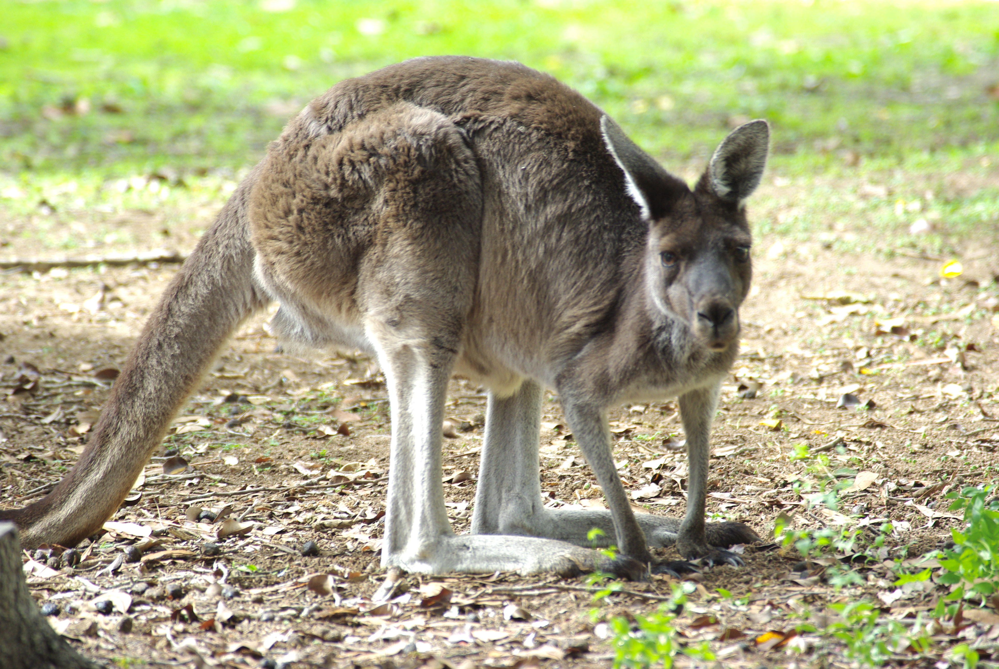

-
- Canguro rojo
El canguro rojo (Macropus rufus) es una especie de marsupial diprotodonto
de la familia Macropodida; es el mayor marsupial vivienete.
Más información
- Canguro gris oriental
El canguro gris oriental,también conocido como canguro gigante (aunque el canguro rojo
sea más grande que él) tiene dos subespecies: Macropus giganteus giganteus y
Macropus giganteus tasmaniensis.Más información
- Canguro gris occidental
El canguro gris occidental (Macropus fuliginosus) es una especie de marsupial diprotodonto
de la familia Macropodidae. Es uno de los más grandes y abundantes canguros de su género. Más información